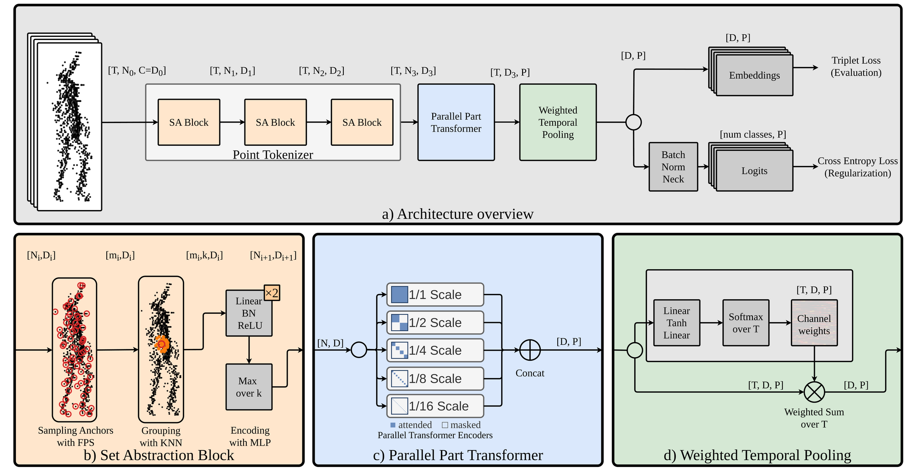
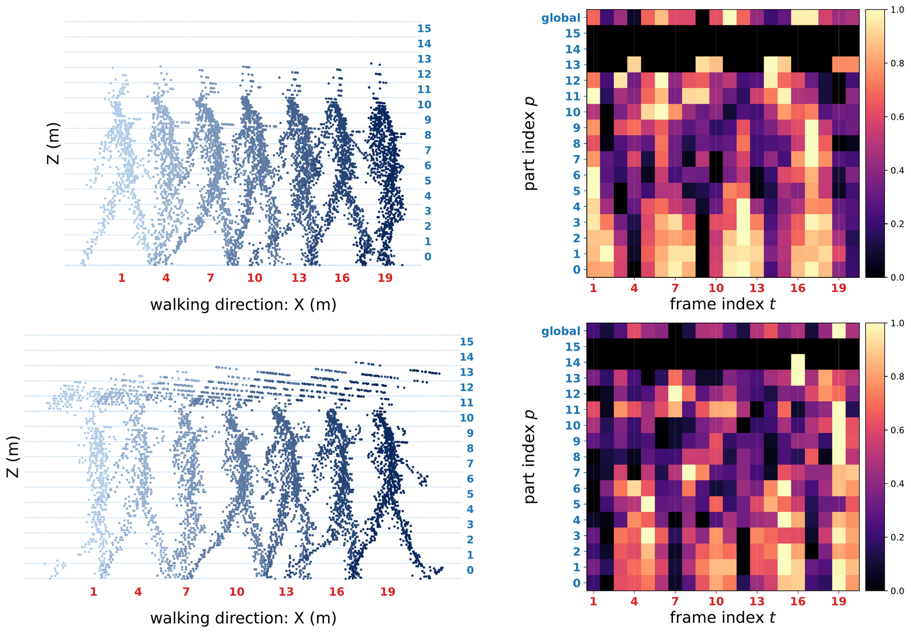

GaitPPT in 3 minutes
Abstract
Recognizing a person by gait, i.e., the way they walk, is a well-studied biometric task for which Lidar point clouds offer substantially greater robustness than 2D images: the sensor is less affected by lighting and captures the 3D shape of the body more directly, which most notably improves robustness to viewpoint changes. Recent methods for Lidar gait recognition have focused on adapting point-cloud or voxel encoders to the gait domain, but the way information is aggregated within and across frames has received less attention. Most systems take the maximum activation across frames, ignoring that different feature channels may peak at different times in the gait cycle.
We introduce GaitPPT, a Parallel Part-based Transformer that targets two underexplored design axes: where attention is allocated within a frame, and how information is aggregated across frames. Spatially, GaitPPT runs multiple transformer encoder branches in parallel, each restricted to a horizontal slice of the body at a different vertical resolution; e.g., leg-height tokens cannot attend to torso-height tokens. Temporally, a lightweight learned module assigns every feature channel its own per-frame weighting, replacing the max-over-frames pooling used by prior work. On the SUSTech1K benchmark, GaitPPT-Base reaches 94.23% Cross-view Rank-1 with only 2.87 M parameters, an absolute improvement of 1.53% over the previous best point-based method, LidarGait++ (92.70% at 4.32 M), while using roughly one-third fewer parameters. These results suggest that an explicit vertical-structure prior is a useful inductive bias for Lidar-based gait recognition, and that frame-wise max pooling underutilizes the temporal structure of gait.
Method

① Parallel Part Transformer
One encoder branch per vertical scale. A height mask restricts attention to tokens in the same height bin, using absolute z so the model stays size-aware.
② Weighted Temporal Pooling
Replaces max-over-frames: a small MLP scores every (frame, channel) pair and a per-channel softmax over time pools the sequence. Only 2D² ≈ 131 k extra parameters.
③ Axis-decoupled scaling
XY and Z are scaled independently during training, covering more body shapes while staying close to the real training distribution.
What the temporal pooling learns

Results on SUSTech1K
| Method | Input | Params | NM | BG | CL | CR | UB | UF | OC | NT | Overall |
|---|---|---|---|---|---|---|---|---|---|---|---|
| LidarGait | depth | 8.03 M | 91.80 | 88.64 | 74.56 | 89.03 | 67.50 | 80.86 | 94.53 | 90.41 | 86.77 |
| HMRNet | depth + points | – | 92.70 | 92.30 | 79.60 | 90.30 | 83.10 | 86.20 | 95.20 | 90.40 | 90.20 |
| GaitCloud | voxels | – | 89.82 | 90.30 | 79.17 | 89.65 | 85.79 | 89.02 | 94.39 | 90.62 | 89.20 |
| LidarGait++ | points | 4.32 M | 94.20 | 93.90 | 79.70 | 92.40 | 91.50 | 91.90 | 96.60 | 92.20 | 92.70 |
| GaitPPT-Tiny | points | 1.05 M | 94.11 | 91.44 | 76.01 | 89.59 | 87.79 | 90.89 | 94.82 | 89.19 | 90.24 |
| GaitPPT-Base | points | 2.87 M | 96.34 | 95.64 | 81.50 | 94.24 | 92.91 | 94.90 | 96.31 | 92.49 | 94.23 |
| GaitPPT-Large | points | 6.15 M | 96.84 | 95.59 | 81.08 | 94.35 | 93.01 | 94.93 | 96.69 | 92.35 | 94.32 |
Cross-view Rank-1 (%), single run, bold = best. NM normal · BG bag · CL clothing · CR carrying · UB umbrella · UF uniform · OC occlusion · NT night. On FreeGait, GaitPPT-L reaches 85.74% Rank-1 / 89.80% mAP and GaitPPT-B 83.80% / 88.45%, versus 82.00% / 87.20% for LidarGait++.
Citation
@inproceedings{bodis2026gaitppt,
title = {{GaitPPT}: Parallel Part-based Transformer for Gait Recognition from Lidar Point Clouds},
author = {B{\'o}dis, Bal{\'a}zs M. and Nagy, Gerg{\H{o}} and Benedek, Csaba},
booktitle = {Proceedings of the British Machine Vision Conference (BMVC)},
year = {2026}
}